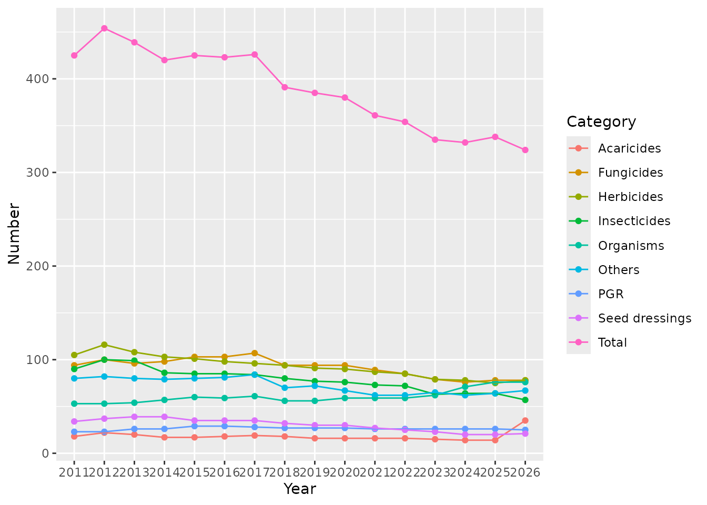

Trends of data contained in XML dumps of the Swiss Register of Plant Protection Products
Johannes Ranke
Last change 4 November 2025 (rebuilt 2026-02-19)
Source:vignettes/srppp_trends.Rmd
srppp_trends.Rmd
knitr::opts_chunk$set(tidy = FALSE, cache = FALSE)
options(knitr.kable.NA = '')
library(srppphist)
library(dplyr)
library(kableExtra)
library(ggplot2)Trends of numbers of active substances
The figure below shows the number of active substances contained in products occurring in the Swiss Register of Plant Protection Products over the years starting from 2011. Unauthorized products and active substance only contained in such products are filtered out using the function srppp_xml_product_use_no_authorized.
The categories are based on the classification in the register. Each active substance can have more than one category, therefore the total number of active numbers is smaller than the sum of the active substances in each category.
years <- names(srppp_list)
names(years) <- years
actives_by_category <- sapply(years, function(year) {
sr <- srppp_list[[year]]
actives_categories <- sr$products |>
mutate(nonauth = srppp_xml_product_use_not_authorized(name, year, exhaustionDeadline)) |>
filter(!nonauth) |>
left_join(sr$categories, by = "pNbr", relationship = "many-to-many") |>
select(pNbr, category = category_de) |>
unique() |>
left_join(sr$ingredients, by = "pNbr", relationship = "many-to-many") |>
dplyr::filter(type == "ACTIVE_INGREDIENT") |>
left_join(sr$substances, by = "pk") |>
select(pk, category, substance_de) |>
unique() |>
arrange(pk, substance_de, category)
n_actives <- actives_categories |>
select(pk) |>
unique() |>
nrow()
actives_categories |>
group_by(category) |>
summarise(n = n()) |>
arrange(desc(n))
n_tibble <- actives_categories |>
mutate(category = case_when(
grepl("Herbizid", category) ~ "Herbicides",
grepl("Fungizid", category) ~ "Fungicides",
grepl("Insektizid", category) ~ "Insecticides",
grepl("Saatbeizmittel", category) ~ "Seed dressings",
grepl("Regulator", category) ~ "PGR",
grepl("Phytoregulator", category) ~ "PGR", # new in 2024
grepl("Lebende Organismen", category) ~ "Organisms",
grepl("Akarizid", category) ~ "Acaricides",
.default = "Others"
)) |>
group_by(category) |>
select(substance_de, category) |>
distinct() |>
summarise(n = n())
n <- n_tibble$n
names(n) <- n_tibble$category
n <- c(Total = n_actives, n)
n <- n[c(
"Acaricides",
"Fungicides",
"Herbicides",
"Insecticides",
"Organisms",
"PGR",
"Seed dressings",
"Others",
"Total"
)]
return(n)
})
actives_by_category |>
kbl()| 2011 | 2012 | 2013 | 2014 | 2015 | 2016 | 2017 | 2018 | 2019 | 2020 | 2021 | 2022 | 2023 | 2024 | 2025 | |
|---|---|---|---|---|---|---|---|---|---|---|---|---|---|---|---|
| Acaricides | 18 | 22 | 20 | 17 | 17 | 18 | 19 | 18 | 16 | 16 | 16 | 16 | 15 | 14 | 14 |
| Fungicides | 94 | 100 | 96 | 98 | 103 | 103 | 107 | 94 | 94 | 94 | 89 | 85 | 79 | 76 | 78 |
| Herbicides | 105 | 116 | 108 | 103 | 101 | 98 | 96 | 94 | 91 | 90 | 87 | 85 | 79 | 78 | 75 |
| Insecticides | 90 | 100 | 99 | 86 | 85 | 85 | 84 | 80 | 77 | 76 | 73 | 72 | 63 | 64 | 64 |
| Organisms | 53 | 53 | 54 | 57 | 60 | 59 | 61 | 56 | 56 | 59 | 59 | 59 | 62 | 71 | 76 |
| PGR | 23 | 23 | 26 | 26 | 29 | 29 | 28 | 27 | 27 | 27 | 26 | 26 | 26 | 26 | 26 |
| Seed dressings | 34 | 37 | 39 | 39 | 35 | 35 | 35 | 32 | 30 | 30 | 27 | 25 | 23 | 20 | 20 |
| Others | 80 | 82 | 80 | 79 | 80 | 81 | 84 | 70 | 72 | 67 | 62 | 62 | 65 | 62 | 64 |
| Total | 425 | 454 | 439 | 420 | 425 | 423 | 426 | 391 | 385 | 380 | 361 | 354 | 335 | 332 | 338 |
actives_by_category_long <- actives_by_category |>
tibble::as_tibble(rownames = "Category") |>
tidyr::pivot_longer(cols = where(is.numeric), names_to = "Year", values_to = "Number") |>
ungroup() |>
group_by(Category)
actives_by_category_long |>
ggplot(aes(Year, Number, group = Category, color = Category)) +
geom_point() +
geom_line()